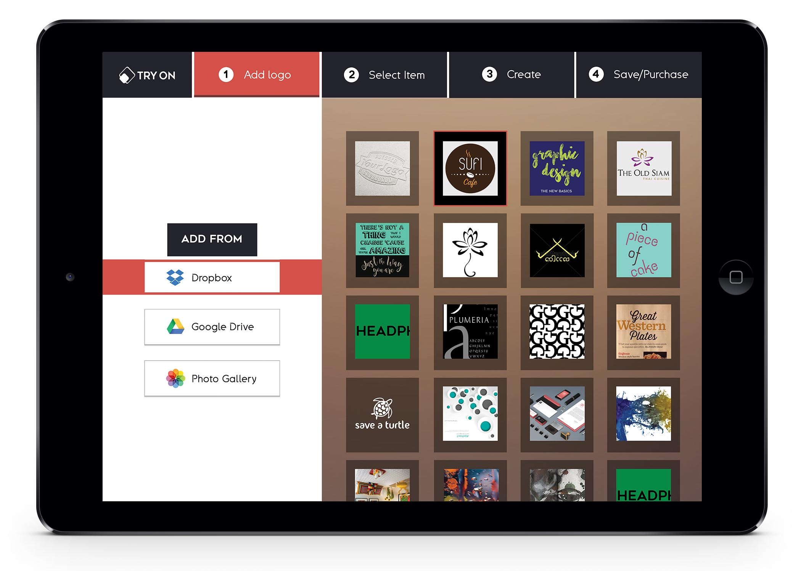
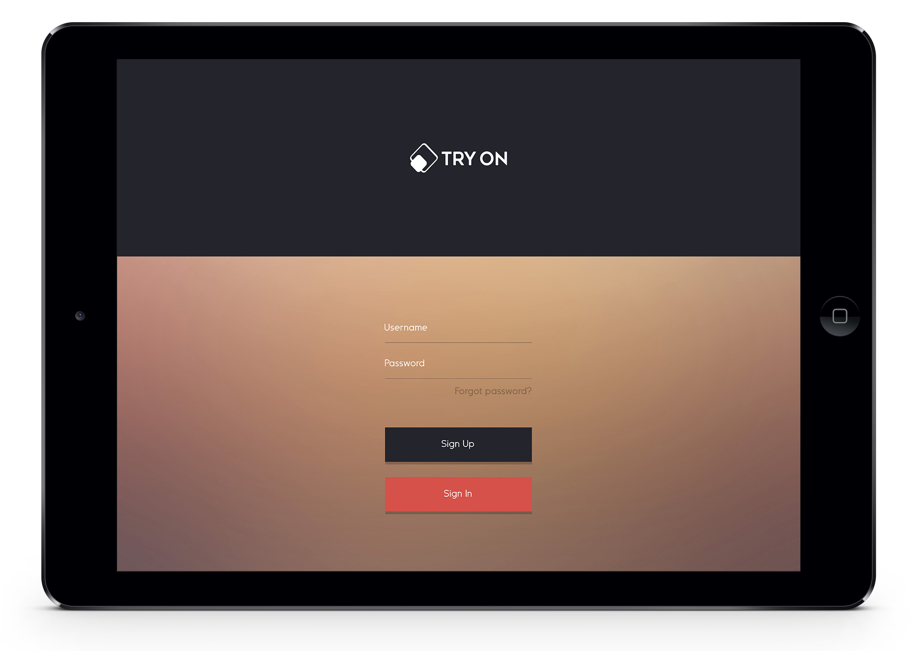

try On app
Goal: To design a graphically interesting tablet application based on the concept of a designers tool which can be used as a problem solver. The application had to lean heavily on form, user experience and have a clear sense of function and logic to it. The design had to be simple and user friendly. It had to include five sequential screens with the purpose of moving the user to the end goal. Social media had to be woven into the design as it would serve as a sharing feature.
App ipad mock-up

Ipad mock-up

Step 1


Step 2 and 3


Step 4 and 5

